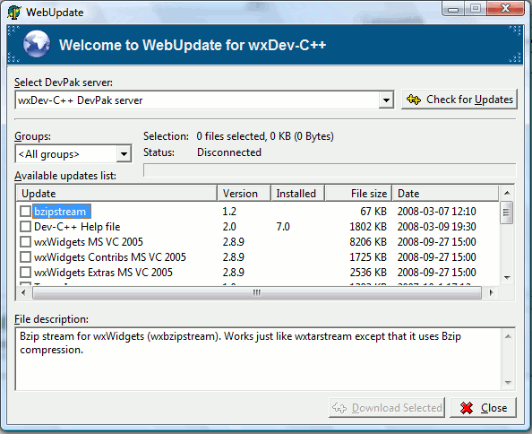
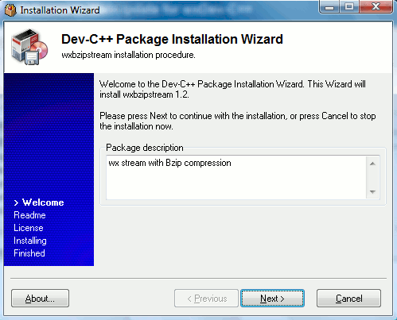
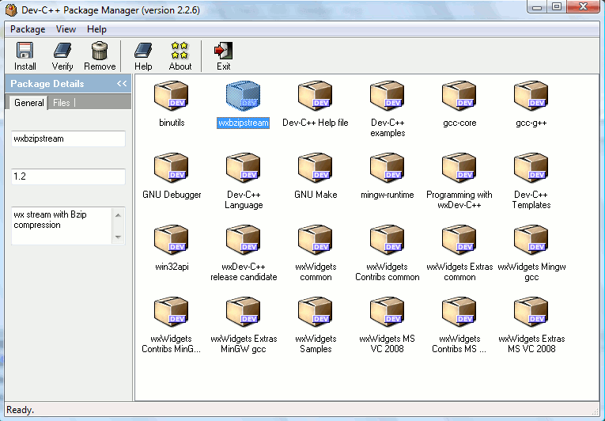
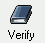
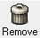

wxDev-C++ makes use of Dev-C++'s DevPak
system for updating and
improving the program. For example, if you need to use SQLite
or
OpenSSL in your programs, there are probably DevPaks out there that
will allow you to automatically add the header files, libraries, and
templates needed to easily add these functions to your programs.
DevPaks are also used to automatically update the IDE or the RAD.
What's in a DevPak?
A DevPak is really just a compressed package containing files that will
be copied to your computer. The DevPak creator first creates
a
file (extension .devpackage) that contains what
files to
include in the DevPak and where to copy them on the target computer.
Those files are then added to a single file using the tar
archiving tool (extension .tar) and that single
archive file is compressed using the bzip2 tool (extension .tar.bz2).
The single, compressed archive file is given the extension .devpak,
but it is actually just a tar'd, bzip2'd archive similar to other
packages you may have downloaded. Although you can create DevPaks
manually, the developers of Dev-C++ made the process even easier by
providing a GUI for making DevPaks called PackMaker. You tell
PackMaker what files to include in your DevPak and in what directories
to install those files, and PackMaker handles the archiving for you.
Where do I get DevPaks?
The
easiest way to get DevPaks is to use wxDev-C++'s web update feature.
WebUpdate searches a list of DevPak servers and tells you if the ones
online are newer than the ones you already have installed. To activate
WebUpdate, go to the Tools menu and select Check for Updates/Packages.

You can select the online DevPak server
in the dropdown box and then click the Check for Updates
button to download a list of available DevPaks on that server. Note
that we suggest using DevPaks from the wxDev-C++ server because we know
they'll work with the wxDev-C++ IDE. Other DevPaks may
require
some manual intervention to get the correct paths for the compiler and
linker.
Once you find a DevPak you want to
download, click on the empty checkbox to the right of its name and then
click the Download Selected button at the
bottom, right of the window. The DevPak will be download from the
webserver and will begin the install process:

In the above case, I've selected the
wxBzipStream DevPak to install. There's usually a Welcome
screen that explains what the package will install and screens for the ReadMe
and License files that typically come
with packages. Continue the DevPak installation by clicking
on the Next
button until you are told that the DevPak has installed successfully.
Once finished, our wxBzipStream library should be installed on our
computer and ready for use in our programming.
Managing DevPaks
How do I know that my new DevPak really installed
correctly?
What happens if I want to uninstall it?
To manage your DevPaks, the Dev-C++ developers created a DevPak manager
called PackMan. To activate PackMan click on the Tools
menu and select Package
Manager.

As you can see, the wxBzipStream package is shown along with the other
packages installed on my system. In the notebook page to the left of
the screen, you'll see that the General
tab lists the name, version, and description of the DevPak. If you
click on the Files tab, you'll see a list
of the files that are associated with this DevPak and where they have
been installed on your computer.
To verify that the DevPak
successfully installed all of its files to your computer, select the
DevPak's icon and click on the Verify
tool in the toolbar. A message box should appear telling you if any
files that should be in the DevPak don't appear on your computer in
their correct location.
To uninstall the DevPak,
select the DevPak's icon and click on the Remove
tool in the toolbar. PackMan will delete all of the files from your
computer that were a part of this DevPak.